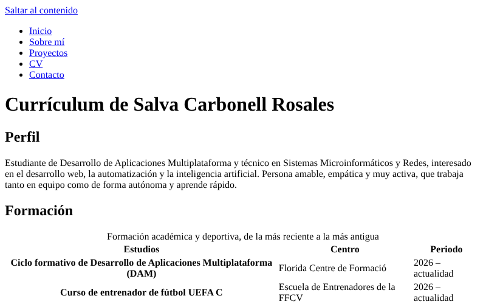
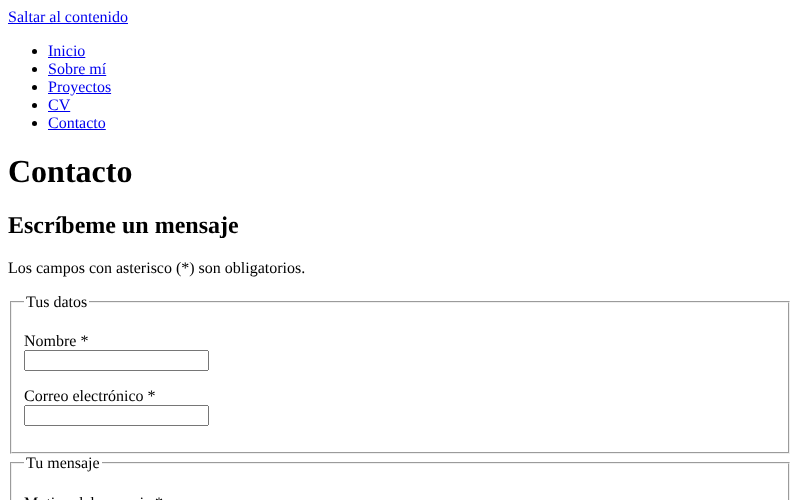

Estos son seis de los trabajos que he hecho en el primer trimestre del curso
de Lenguajes de Marcas. De cada uno cuento qué es, enseño una captura y explico
qué aprendí al hacerlo.
Práctica 1 · Mi primera página
Mi primera página web: un título, una frase y un enlace, dentro de una carpeta de proyecto.
Captura de la Práctica 1.
Qué aprendí: la estructura mínima de un documento HTML (cabecera y cuerpo), a poner un título, un párrafo y un enlace, y a organizar los archivos de un proyecto en carpetas.
Actividad 4 · Ficha personal
Mi ficha personal con quién soy, qué sé hacer y qué quiero aprender, usando encabezados, listas y énfasis.
Captura de la ficha personal de la Actividad 4.
Qué aprendí: a estructurar un texto con encabezados, párrafos, listas ordenadas y no ordenadas, y a destacar palabras con negrita y cursiva.
Actividad 5 · Mi entorno de trabajo
Una página que explica qué ocurre cuando escribo una URL, qué herramientas uso y cómo organizo las carpetas del portfolio.
Captura de la página sobre mi entorno de trabajo, la de la Actividad 5.
Qué aprendí: cómo llega una página desde el servidor hasta mi navegador (DNS y HTTP/HTTPS), para qué sirve cada herramienta que uso y cómo organizar las carpetas de mi portfolio.
Una segunda página con un menú común, un índice de anclas y enlaces externos, de correo y de descarga.
Captura de la página Sobre mí con su menú y su índice, tal como quedó en la Actividad 6.
Qué aprendí: a conectar varias páginas con un menú, a enlazar secciones concretas con anclas, y a usar enlaces externos seguros, de correo y de descarga.
Mi currículum en HTML, con una tabla de formación, una tabla de competencias con celdas combinadas y listas de experiencia e idiomas.

Captura del comienzo de la página del currículum.
Qué aprendí: a construir tablas accesibles con título, cabecera, cuerpo y celdas de encabezado de fila, y a combinar celdas con colspan y rowspan sin perder el orden de lectura.
Una página de contacto con un formulario validado, un enlace de correo alternativo y un mapa de mi ciudad.

Captura del comienzo de la página de contacto.
Qué aprendí: a agrupar campos con fieldset y legend, a asociar cada campo con su etiqueta y a usar la validación nativa del navegador (campos obligatorios, correo, longitud máxima y casilla de privacidad).